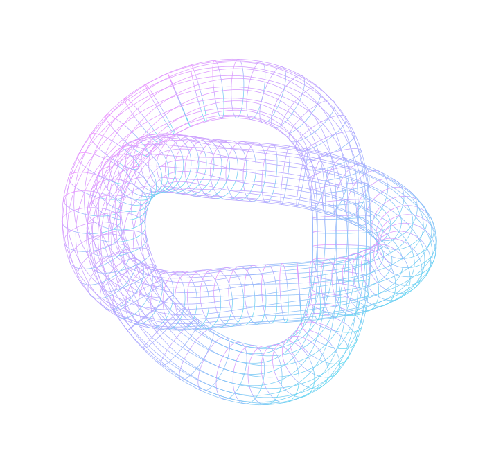

本文へ移動
▤
REVIEW
CLASSIFIER
NON-COMMERCIAL / TECH DEMO
LOCAL REVIEW CLASSIFICATION
口コミを、
見渡せる
かたちに。
たくさんの声が、整理されていく。
その流れを、短いデモ映像で。
デモを見る
↗
12秒のデモ映像 · 音声なし
voice_mapper.obj
＋

MANY VOICES.
A CLEARER VIEW.
FIG. 001
TEXT → EMBEDDING → LABEL